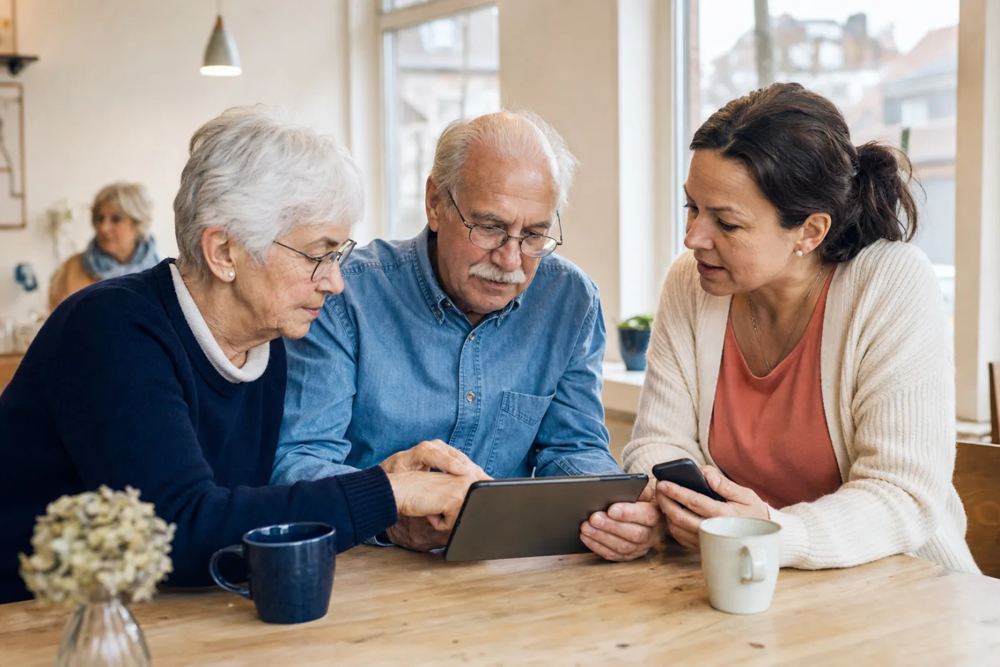

Termin vom 9. September 2026
Smartphone und Tablet kennenlernen
Vier Seiten mit Übungen zu Tasten, Gesten, Orientierung, Einstellungen und WLAN.
Übungsblatt öffnen (PDF)Gemeinsam digital sicherer werden
Beim Digitalcafé Lensahn schauen wir uns Fragen zu Smartphone, Tablet, Computer und dem digitalen Alltag in Ruhe gemeinsam an. Verständlich, praktisch und ohne Fachsprache.
Nächsten Termin ansehen
Alle zwei Wochen
Jeder Termin hat ein verständliches Thema. Zusätzlich bleibt Zeit zum gemeinsamen Ausprobieren und für Ihre Fragen.
Nachrichten gezielt beantworten, Sprachnachrichten, Umfragen und Gruppen gemeinsam ausprobieren.
Fotos aufnehmen, in der Galerie wiederfinden und über einen Messenger versenden.
Das genaue Thema wird nach den ersten Treffen und den Fragen der Teilnehmenden festgelegt.
Herbstferien: Am 21. Oktober findet kein Digitalcafé statt. Weiter geht es am 4. November.
Zum Nachlesen
Die Unterlagen können Sie am Bildschirm öffnen oder für das Wiederholen zu Hause ausdrucken.
Termin vom 9. September 2026
Vier Seiten mit Übungen zu Tasten, Gesten, Orientierung, Einstellungen und WLAN.
Übungsblatt öffnen (PDF)So funktioniert es
Bringen Sie Ihr Smartphone oder Tablet am besten zusammen mit dem Ladegerät und einer konkreten Frage mit. Wir beginnen mit einem kurzen vorbereiteten Thema und probieren die Schritte gemeinsam am eigenen Gerät aus.
Danach bleibt Zeit für vorab eingereichte und spontane Fragen. Wir erklären die Schritte so, dass Sie sie später selbst wiederholen können.
Gut ankommen
Das Digitalcafé findet in der Gaststube des Museumshofs Lensahn, Bäderstraße 18, 23738 Lensahn, statt.
Für den Besuch des Digitalcafés ist kein Museumseintritt nötig. Sagen Sie am Eingang einfach, dass Sie zur Gaststube oder zum Digitalcafé möchten.
Die Teilnahme ist kostenlos. Wer möchte, kann in der Gaststube auf eigene Rechnung etwas bestellen.
Dabei sein oder eine Frage mitbringen
Sie können auch spontan vorbeikommen. Eine kurze Nachricht hilft mir aber, den Termin gut vorzubereiten. Schreiben Sie mir gern, wenn Sie kommen möchten und ob Sie ein Smartphone oder Tablet mitbringen.
Wenn Sie eine konkrete Frage schicken, schreiben Sie bitte dazu, zu welchem Termin Sie kommen möchten. Dann kann ich die Frage vorbereiten und wir können sie gemeinsam vor Ort besprechen.
Wer das Digitalcafé organisiert
Ich bin Gunnar Wrobel und beschäftige mich seit meiner Jugend intensiv mit Computern und digitaler Technik. Heute arbeite ich beruflich an digitalen Anwendungen. Mir ist wichtig, dass niemand im digitalen Alltag zurückbleibt und alle die Chance haben, Technik selbstbestimmt zu nutzen. Im Digitalcafé möchte ich mein Wissen verständlich weitergeben und dabei helfen, Smartphone und Tablet sicherer zu bedienen.
Gut zu wissen
Das Digitalcafé ist kein Reparaturdienst und ersetzt keine Beratung durch Banken, Behörden, Rechtsberatung oder Fachbetriebe.
Passwörter und Zugangscodes bleiben bei Ihnen. Wir führen keine Zahlungen oder Vertragsabschlüsse für Sie durch und melden Sie auch nicht stellvertretend bei Banken oder Behörden an.